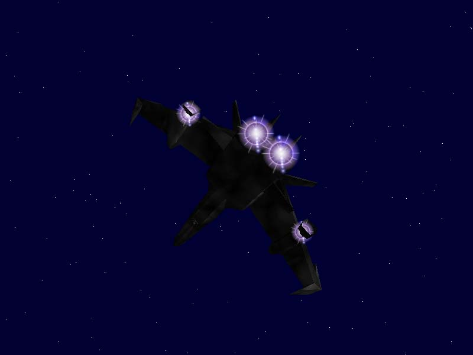

Vampire
Name : Vampire
Type : Heavy Cloaked Fighter
Model : F-109c
Speed : 800 kps
Afterburner : 1400 kps
Yaw/Pitch/Roll : 103/103/103 dps
Shield : Fore 30u Sides 25u Aft 25u
Armor : Front 500u Side 480u Rear 600u
Hull : 1000u
Cargo : N/A
Radar : Color
Jump Drive: Yes
Cloaking : Yes
Guns : 3 Mount (1 Medium, 2 Medium/Heavy)
Default : 1 Disruptor, 2 Ktech Beam
Missile : N/A
Default Loadout : N/A
Info :

